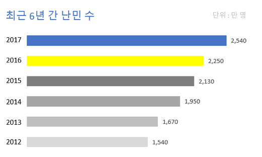
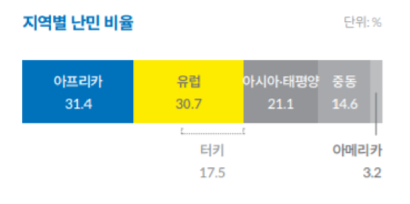
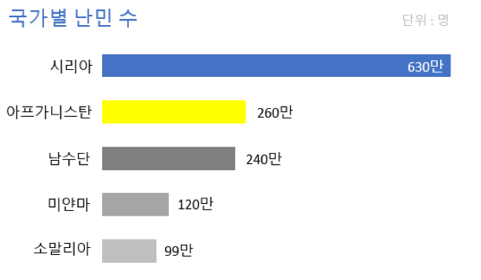
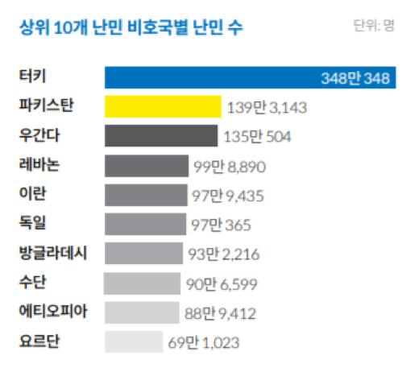
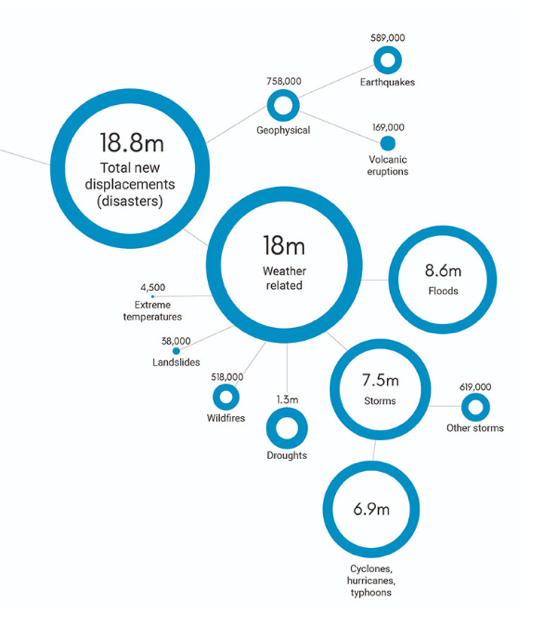
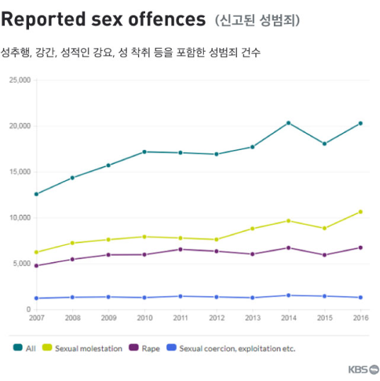

난민이란 누구인가? UN난민기구(UNHCR)는 편람(Handbook) 및 지침(Guidelines)을 통해 어떤 사람을 난민으로 인정할 것이며 일단 난민으로 인정되면 어떤 도움을 제공할 것인가에 대한 국제적인 합의를 설명한다. 2011년 발행된 UN난민기구 편람은 난민을 다음과 같이 정의한다.
"who are outside their country of nationality or habitual residence and unable to return there owing to serious and indiscriminate threats to life, physical integrity or freedom resulting from generalized violence or events seriously disturbing public order."
2011 UNHCR Resettlement Handbook p.19
이 짧은 문장 속에는 난민문제 해결을 위한 국제사회의 오랜 고민과 노력이 담겨있다. 전쟁과 자연재해 등의 이유로 살던 땅을 떠나 유랑하는 사람들에게 보다 안전한 삶의 터전을 제공하기 위한 국제적 차원의 조직적 노력이 시작된 것은 1차세계대전 이후다. 러시아 혁명, 나치의 유대인 학살, 2차세계대전 등으로 대규모 난민사태가 발생하면서 국제협력을 통한 난민문제해결의 필요성은 더욱 절실해졌지만 난민에 대한 시각은 다양했다. 대규모 난민들에게 보다 효율적이고 조직적인 도움을 제공하기 위해서는 난민에 대한 국제사회의 합의가 필요했고 그 결과가 1951년 ‘난민 지위에 관한 협약’이다. 흔히 UN난민협약이라 불리는 이 협약에 현재 우리가 일반적으로 사용하는 난민에 대한 정의가 처음 등장한다. 앞에서 소개한 2011년 UN난민기구의 난민 정의도 여기에서 출발한다.
1951년 난민지위에 관한 협약 1장 1조 A-(2)항은 난민을 다음과 같이 정의한다.
“1951년 1월 1일 이전에 발생한 사건의 결과로서, 또한 인종, 종교, 국적, 특정사회집단의 구성원 신분 또는 정치적 의견을 이유로 박해를 받을 우려가 있다는 충분한 근거가 있는 공포로 인하여, 자신의 국적국 밖에 있는 자로서, 국적국의 보호를 받을 수 없거나, 또는 그러한 공포로 인하여 국적국의 보호를 받는 것을 원하지 아니하는 자. 또는 그러한 사건의 결과로 인하여 종전의 상주국 밖에 있는 무국적자로서, 상주국에 돌아갈 수 없거나, 또는 그러한 공포로 인하여 상주국으로 돌아가는 것을 원하지 아니하는 자.
UN난민협약은 난민에 대한 국제사회의 합의를 만들어냈다는 데 큰 의미가 있지만 2차 세계대전 이후 유럽의 난민 문제에 대한 대응책으로 초안작성 되었기 때문에 적용에 있어 두 가지 주요한 제약이 있다. 우선, 난민의 정의는 일반적이지만 1951년 이전 발생한 사건에 의해 출신국을 떠난 사람들에게만 해당한다. 두 번째로, 협약 체약국은 유럽 내 난민에 대해서만 협약을 적용하도록 지역적 제한을 명시한다.
이런 한계를 보완하기 위해 유엔은 1967년, ‘난민 지위에 관한 의정서’라는 짧은 협약을 만들고 이를 통해 1951년 난민협약의 시간적, 지역적 제한을 없앴다. 1951년 ‘난민 지위에 관한 협약’과 1967년 ‘난민 지위에 관한 의정서’를 합쳐 통상적으로 ‘세계 난민 협약’이라고 하며, 이에 따르면 난민은 다음과 같이 정의된다.
“인종, 종교, 국적, 특정사회집단의 구성원 신분 또는 정치적 의견을 이유로 박해받을 우려가 있다는 합리적 근거가 있는 공포로 인하여, 자신의 국적국 밖에 있는 자로서, 국적국의 보호를 받을 수 없거나, 또는 그러한 공포로 인하여 국적국의 보호를 받는 것을 원하지 않는 자”
현재의 난민 관련 협약 중 가장 영향력 있는 세계 난민 협약은 세 가지 주요 주제를 담고 있다.
첫째, 난민에 대한 기본정의와 난민 지위 정지요건 및 난민 지위 배제요건,
둘째, 비호국에서 난민의 법적 지위, 권리와 의무, 자신의 생명이나 자유가 위협받을 영역으로 강제 송환되는 것으로부터 보호받을 권리,
셋째, 유엔난민기구가 난민협약의 내용이 적절히 적용하고 있는지를 감독하고 난민 보호 업무를 쉽게 수행할 수 있도록 도와야 하는 모든 유엔난민기구 체약국의 의무
세계 난민 협약에 의해 국제적 합의에 도달한 ‘난민’에 대한 정의는 이후 아프리카통일기구(QAU) 협약에서 더욱 구체화된다. 아프리카는 식민지 시대 이후 원주민 부족들에 의해 자연스럽게 나눠진 것이 아닌 유럽이 지도상으로 자로 재듯이 국가들을 나누었다. 그렇기에 대다수 국가가 고유의 민족성과 정체성을 보유하지 못한 상태로 독립되었고 이것이 내전으로 연결되어 대규모의 난민 사태가 발생했다. 고향을 떠나 국경을 넘는 대규모 난민문제는 내전 발생국만의 문제가 아니라 주변국가에도 큰 영향을 미쳤다. 이에 따른 문제를 해결하기 위해 1969년, 아프리카통일기구(현 아프리카연합)의 여러 회원국이 아프리카 난민 문제를 규율하는 아프리카통일기구(OAU) 협약을 채택하였다.
OAU 조약은 비호 제공에 대해 최선의 노력을 기울일 의무에 대한 언급과 난민문제에 대한 영구적 해결책 제공을 통해 1951년 난민 지위에 관한 협약을 보완하고 있다. 또한 UN의 난민에 대한 정의에 아프리카의 상황을 추가함으로써 더욱 광범위한 난민의 개념을 제시하고 있다. OAU 협약은 난민을 다음과 같이 정의한다.
“출신국 또는 국적국의 일부 또는 전부에 대한 외부적 침략, 점령, 외국의 지배나 공공질서를 심각하게 해치는 사건으로 인해 강제로 자신의 나라를 떠나야했던 모든 사람”
난민에 대한 보호는 인도적 차원이 아니더라도 세계 각국이 함께 약속한 국제법적 의무이기도 하다. 난민의 지위에 관한 협약 및 난민의 지위에 관한 의정서가 현재까지도 난민 보호에 있어서 국제법 및 국내법의 근간이 되고 있다.
출처
https://www.unhcr.or.kr/unhcr/main/index.jsp
Date: 2018.12.07.
UNHCR
유엔 난민기구
UNHCR이란?
유엔 난민기구(UNHCR)은 1949년 12월 3일 유엔 총회에서 창설되었다. 또한, 난민을 보호하고, 난민 문제를 해결하기 위한 국제적인 조치를 주도하고 조정할 권한을 부여받았다. UNHCR의 활동은 난민의 권리와 복지를 보호하는 데 주요 목표를 두고 있다. 누구나 비호를 신청할 권리를 누리고, 자발적 본국 귀환, 현지 동화 혹은 제3국 재정착의 방법으로 다른 나라에서 안전한 피난처를 보장받을 수 있도록 UNHCR은 앞장서고 있다.
평화를 이끄는 UNHCR
UNHCR은 1951년 1월 33명의 직원과 미화 30만불의 예산으로 출범한 이래 지난 60여 년 동안 국제적 활동을 이끄는 단체로 거듭났다. 2017년 현재 130개국에서 근무하는 10,900여명의 직원들이 6,560만 명에 달하는 난민과 보호대상자들을 돕고 있으며 난민 보호의 공로로 1954년, 1981년 두 차례 노벨 평화상을 수상하였다.
UNHCR의 역사
UNHCR의 역사는 1920년대로 거슬러 올라간다. 러시아 혁명 이후 발생한 난민 히틀러 치하의 독일에서 발생한 난민들을 비롯 2차세계대전 이후 발생한 약 120만 명의 유럽 난민문제를 해결하기 위해, 유엔의 전신인 국제연맹(League of Nations)은 고등판무관(High Commissioner)을 임명하고 난민문제를 초국가적 문제로 다루기 시작했다.
이러한 노력의 연장선상에서, 국제연맹의 뒤를 이어 탄생한 국제연합 (United Nations)은 국제연합 구호 및 재건기구(UNRRA ,United Nations Relief and Rehabilitation Administration)와 국제난민기구(IRO,International Refugee Organization) 를 각각 1944년, 1947년에 설치하여 긴급구호, 법적 보호를 통해 난민문제를 해결하고자 노력하였다. 그러나 IRO는 시대적 정치 상황과 맞물려 여러 국가로부터 충분한 지원을 얻지 못하였고 유엔은 새로운 난민기구의 필요성을 주장하기 시작하였다.
그 결과로 1949년 12월 유엔총회 결의문 319(V)를 통해 유엔총회의 보조 기관으로 UNHCR이 설립되었다. 설립 당시에는 영구적인 기구의 설치로 인한 정치적 영향에 대해 여러 나라들의 의견이 엇갈리면서 1951년 1월부터 3년 동안 운영하는 것으로 결정되었다.
UNHCR의 임무
비정치적, 인도적인 차원에서 난민들에게 국제적 보호를 제공하고, 이들을 위한 영구적 해결책을 모색하는 것이다. UNHCR의 핵심 임무는 1950년 UN총회 결의로 만들어진 UNHCR 사무소 규정에서 처음 규정되었고, 그후 UN총회 및 경제사회이사회(ECOSOC)의 결의문에 의해 확대되었다.
이 규정에 의해 다른 유엔기구로부터 도움을 받고 있는 보호대상자들은 UNHCR의 임무 밖에 있다. UNHCR의 임무는 유엔총회에서 3년마다 연장되어 오다가, 2003년에 난민문제가 완전히 해결될 때까지 계속 업무를 수행하도록 승인을 받았다.
Date: 2018.12.07.
Statistics on refugees
난민에 대한 통계와 2017년 UNHCR 연례 보고서 소개
2017년 UNHCR 연례 보고서에는 난민에 대한 다양한 통계들이 소개되어 있다.
1. 2017년 말 기준 박해, 분쟁, 폭력 또는 인권 침해의 결과로 난민 포함 6,850만 명의 강제 실향민이 발생하였다.
이는 세계 인구 순위 20위인 태국 전체 인구 수와 비슷한 수준이다. 이 중 2,540만 명이 난민이고, 1,990만 명이UNHCR에 등록되어 있다. 전 세계 강제 실향민 수는 6년 연속 최고치를 기록하였다.
2. 난민의 수는 해마다 증가하고 있다

2012년 난민의 수는 1,540만 명이었으나 2013년 1,670만 명, 2014년 1,950만 명으로 점점 증가하고 2015년 처음으로 2,000만 명을 넘겼다. 이후에도 난민의 수는 해마다 증가하여 2017년 기준 2,540만 명의 난민이 발생하였다. 이는 여러 지역에서 여전히 전쟁, 폭력 등 무력 분쟁과 종교적, 인종적 박해가 진행되고 있어 난민이 계속 발생하고 있지만 난민을 수용하는 데에는 한계가 있기 때문이다.
3. 지역별로 보면 난민이 가장 많은 지역은 아프리카로 31.4%를 차지한다.

지역별 난민의 비율은 아프리카가 31.4%로 가장 많은 비중을 차지하고 그 뒤를 이어 유럽이 30.7%, 아시아∙태평양이 21.1%, 중동이 14.6%, 아메리카가 3.2%를 차지하고 있다.
4. 출신국별로 보면 시리아 난민이 가장 많다

2017년 전 세계 난민의 68%는 시리아(630만 명), 아프가니스탄(260만 명), 남수단(240만 명), 미얀마(120만 명), 소말리아(99만 명) 5개국에서 발생했다.
시리아는 아랍의 봄 이후 반정부 시위대에 대한 발포, 고문 등 강력대응으로 상황이 내전으로 급변하였고, 외국세력 및 이슬람 극단주의자인 IS까지 가세하여 정부, 반군, IS가 점령하는 3개의 영토로 분열되어 내전이 지속되었다.
아프가니스탄은 탈레반과 알 카에다를 제거하기 위한 전쟁이 끝나고 NATO군이 철수한 이후 탈레반 정권이 활동을 재개하면서 다시 분쟁이 심화되고 있다.
남수단은 2011년 수단에서 분리 독립 후 정권을 둘러싼 쿠데타와 내전이 발발하여 최대 빈곤국으로 전락하였고 내전은 여전히 진행 중이다.
미얀마에서는 서부의 소수민족인 로힝야족에 대한 탄압으로 인해 많은 난민이 발생하고 있다. 미얀마 정부는 로힝야족을 방글라데시에서 온 불법 이민자로 간주하여 국적을 부여하지 않고 난민 캠프에 격리시키고 있다.
소말리아 역시 다른 아프리카 국가들과 비슷하게 쿠데타로 인한 정권 교체, 무정부 상태, 내전에 따른 폭력 사태 등으로 많은 난민이 발생하고 있다.
5. 가장 많은 수의 난민을 허용하는 국가는 터키로 약 348만 명의 난민을 수용하고 있다.

파키스탄, 우간다 역시 130만 명 이상의 난민을 수용하고 있으며, 레바논, 이란, 독일, 방글라데시, 수단 등의 나라에서 약 90만 명 이상의 난민을 수용하고 있다.
6. 아동 청소년 난민에 대한 교육이 절실하다
난민의 52%는 18세 미만 아동으로 2009년 전체 난민의 41%에서 2017년까지 크게 증가했다. 그 중 대부분은 부모와 헤어지거나 혼자 세계를 여행하고 있다. 2017년에만 약 17만 명의 아동이 보호자 없이 홀로 난민 신청을 했다. 150만 명의 난민 아동이 초등학교에 다니지 못하고, 200만 명의 난민 청소년이 중등 교육을 제대로 받지 못하고 있다.
전 세계적으로 91%의 아동이 초등학교에 다니고 있지만 난민 아동의 61%, 저소득 국가 출신 난민 아동의 50% 미만이 초등학교에 다니고 있다. 중등교육 역시 전 세계적으로 84%의 청소년이 중고등학교에 다니고 있지만 난민 청소년의 23%, 저소득 국가 출신 난민 청소년의 9% 만이 중학교를 다니고 있다.
마지막으로 전 세계적으로 대학 진학률은 36%이지만 난민 중 단 1%만이 대학에 입학한다.
7. 기후난민에 대한 관심이 절실하다

IDMC (Internal Displacement Monitoring Centre)의 2018 글로벌 리포트에 의하면 자연재해로 인해 집을 잃은 사람들은 전 세계 135개국에서 약 1,880만 명에 달한다. 이 중 약 1,800만 명이 홍수, 가뭄, 태풍, 사이클론, 허리케인, 산사태, 이상기후 등 기상 상황과 관련된 자연재해로 인해 피해를 입었고, 약 80만 명은 지진, 화산 분출 등의 자연재해로 인해 피해를 입었다. 그러나 이들은 난민의 지위를 취득하지 못했다. 전쟁이나 인종 및 종교적 박해가 아닌 기후 변화를 피하려는 사람들에게는 난민 지위를 주지 않기 때문이다. 그들은 난민 지위를 신청하지 못하고, UNHCR의 도움도 받지 못한다. 기후 난민 문제는 눈앞에 닥친 현실이지만 아직 논의된 바가 없다.
Date: 2018.12.07.
An event that actively changed the reception of refugees
난민 수용을 적극적으로 변화시킨 사건
# “난민의 모습을 닮았던 한국”
2014년 관객들의 마음을 울리며 개봉 후 한 달도 안 돼 천만 관객을 돌파한 영화 ‘국제시장’을 기억하는 사람이 많을 것이다. 6·25 전쟁 이후 가족들을 위해 독일에서는 광부로, 베트남전에서는 군인으로 평생을 희생했던 세대의 이야기를 흥미롭게 풀어낸 영화이다. 본 영화는 6·25전쟁 발발 후 흥남철수를 배경으로 시작한다. 전쟁으로 인해 주인공의 가족은 하루아침에 피난민이 된다. 당시 갑작스럽게 생겨난 난민 10만 명. 그들이 피난 갈 수 있는 길은 오직 남아있는 미국 화물선 한 척을 타는 것뿐이었다. 주인공 가족은 밧줄에 매달리면서까지 필사적으로 배를 타고 이 과정에서 가족과 생이별을 하게 된다. 이 가슴 아픈 장면은 낡은 배를 타고 위태롭게 지중해를 건너 유럽으로 향하는 난민들의 모습을 떠올리게 한다.(사진1) 난민들의 피난과정은 매우 열악하며 난민 중 많은 수가 피난과정에서 가족을 잃고 이별을 경험한다. 그들은 자국에서의 목숨의 위험을 피해 구명조끼도 제대로 갖춰지지 않고, 언제 침몰할지 모르는 낡은 배에 필사적으로 오른다. 발을 헛디디면 죽을 수도 있다는 위험, 뱃멀미 등은 그들에게 고려대상이 아니다. 우리 민족도 일제강점기나 6·25전쟁 때 살기 위해 나라를 떠나 중국, 미국 등지에 정착해야만 했던 시절이 있었다. 그때 우리가 피난을 가며 느꼈던 가족들과 헤어져야 했던 슬픔, 고향을 떠나야 했던 비애, 미래에 대한 불안함 모두 지금의 난민들이 느끼는 감정과 다르지 않을 것이다. 그때의 아픈 역사를 기억하고 있기에 지금 우리나라의 많은 사람이 난민의 처지를 이해하고, 전쟁 당시 어려웠던 우리를 도와주었던 나라들처럼 그들의 아픔을 도와주어 되풀이되는 비극을 막고자 한다. 이에 따라 우리나라의 난민수용을 찬성하는 사람들의 목소리가 커지고 있다.
# “남의 일이 아니다. 역사적 책임 갖고 난민 포용하는 독일”
과거 난민이 되는 아픔을 겪었던 국가 뿐 아니라 난민을 발생시킨 역사를 가진 국가도 이에 대한 책임을 느끼고 난민수용에 적극적이다. 그중 독일은 유럽 내 난민 수용에 가장 관대한 태도를 보인다. 본래 EU는 ‘더블린 조약’에 입각해 난민이 처음 발 디딘 국가가 문제를 처리하도록 했으나, 최근 대규모 난민이 발생하자 난민발생 인접국과 같은 특정 국가의 부담이 커졌다. 이에 대한 해결책으로 독일은 EU회원국 간 할당제 합의를 강도 높게 밀어붙였다. 또한, 독일은 이와 별개로 자발적으로 엄청난 수의 난민을 받고 있다. 2015년 독일은 공식적으로 89만 명의 난민들을 받아들였다.(2018년 6월 국내 제주도 예맨 난민신청자는 약 500명). 2015년 당시 유엔난민기구가 발표한 시리아 난민이 400만 명이었던 점을 고려하면 독일이 난민 문제에 얼마나 적극적인 지 알 수 있다.
독일은 왜 이렇게 난민수용에 적극적일까? 이 질문에 대해 난민의 어머니라 불리는 앙겔라 메르켈 총리는 “전쟁으로 고통을 안겨준 과거에 대한 반성의 의미”라고 답한다. 난민은 주로 내전으로 인해 발생하며 대부분의 내전은 민족 분쟁이고 그 배경에는 독일을 포함한 유럽 국가들의 식민통치가 있다. 유럽 국가들은 다양한 민족들이 살던 지역을 식민통치의 편의를 위해 통합하거나 분할했고 그 결과 식민지 경험을 가진 대부분의 국가들이 독립 후 내전에 휩싸이게 되었다. 독일은 그들이 저질렀던 과거의 잘못을 반성하는 역사의식과 관용정신으로 난민들을 존중하며 난민수용에 적극적으로 임하고 있는 것이다.
# “난민수용의 닫힌 문을 연 난민실태 사진들”
--“쿠르디의 사진, 난민의 처참한 실태를 알리다”
2015년 9월 2일, 사진 한 장이 공개되었다. 아일란 쿠르디라는 3살 소년이 유럽으로 가는 도중 싸늘한 주검이 되어 터키 해안가로 떠밀려온 사진이었다. (사진2) 사진 속 소년은 마치 곤히 자는 듯 엎드린 채 해변에 얼굴을 묻고 있다. 사진이 공개되자 전 세계는 슬픔에 잠겼고 유럽의 여론이 들끓었다. 난민의 처참한 실태에 대한 언론보도와 함께 난민을 받아들이자는 목소리에 힘이 실렸다. 사진의 소년 아일란 쿠르디는 부모님과 5살 형과 함께 터키를 거쳐 유럽으로 가려고 한 시리아 난민이다. 그러나 터키에서 그리스로 넘어가던 도중 쿠르디 가족과 어린이 3명 이상을 태운 고무보트 2대가 모두 지중해에서 거센 파도를 만나 뒤집혔고, 아버지만 살아남고 어머니와 형, 그리고 쿠르디는 죽고 말았다. 쿠르디의 주검은 터키 휴양지 해변으로 떠내려왔고 해변에 엎드린 채 누워있는 모습이 카메라에 담기게 되었다. 그리고 이 사진 한 장은 매년 지중해에서 희생되는 수천 명 난민의 존재와, 전쟁의 가장 큰 희생자는 무고한 아이들임을 세상에 알리는 계기가 되었다.
--“난민이 되지 않을 경우 자국에서 겪는 고통, 다크니시의 구조영상”
쿠르디 사건 후 1년, 시리아의 비극이 끝나지 않았음을 보여주는 영상 하나가 전 세계를 또 한 번 충격과 슬픔에 빠뜨렸다. 바로 시리아의 알레포 공습 이후 무너진 건물 더미에서 극적으로 구출된 어린이 옴란 다크니시의 구조 영상이다. (사진3, 영상링크) 다섯 살 아이 옴란은 먼지를 온통 뒤집어쓰고 피투성이가 된 채 너무 큰 충격에 울지도 못하고 멍하니 앉아있다. 다크니시의 모습은 한창 어리광을 피울 어린 시절을 전쟁으로부터 빼앗긴 아이들의 모습을 대변한다.
수단 출신의 예술가 칼리드 알바이흐는 고향에 남아 죽음을 당하거나, 고향을 떠나더라도 비극을 마주할 수밖에 없는 시리아 아이들의 고통을 삽화(사진 4)로 그렸다. 2016년 8월 18일 자신의 트위터(원문 링크)와 인스타그램을 통해 공개된 삽화는 ‘시리아 어린이들에게 주어진 선택’이라는 제목과 함께 시리아에 ‘남을 경우’와 ‘떠날 경우’의 상황을 다크니시와 쿠르디의 상황에 빗대어 표현했다. 칼리드는 삽화 게시 이후 트위터를 통해 “모두 내 그림이 너무나 슬프다고 말한다. 실제 상황은 어떨지 생각해봐 달라”라고 적었다.
이 두 사진의 힘은 대단했다. 사진은 난민들이 처한 상황을 강렬하고 생생하게 전달하였으며 난민수용에 긍정적인 변화의 바람을 일으켰다. 쿠르디 사진이 공개된 다음 날 독일과 프랑스는 난민 할당제에 합의했으며 독일의 앙겔라 메르켈 총리는 시리아 난민들을 조건 없이 모두 받아들이겠다는 통 큰 결정을 해 세상을 놀라게 했다. 난민수용에 소극적이었던 일부 국가들은 적극 수용으로 입장을 바꾸었다. 데이비드 캐머런 영국 총리 역시 입장을 선회하여 난민수용에 긍정적인 반응을 보였다. 헝가리나 이탈리아 등지에 발이 묶여 있던 난민들은 독일로 이동했다. 또한, 쿠르디의 이름을 따 개설된 시리아 난민 어린이를 돕는 모금펀드에는 하루 만에 473명이 모두 1만5천286파운드(약 3천만 원)를 기부했다. 3살 소년의 안타까운 죽음은 유럽 사회가 더 포용적으로 난민을 수용하게 해주었고 무관심으로 닫혀있던 난민수용의 문을 열게 해주었다. 다크니스의 영상 또한 인권활동가들이 기존 정부 계획의 두 배인 20만 명의 난민을 수용해야 한다고 오바마 대통령을 압박하는 계기가 되는 등, 사회적으로 난민수용에 대한 적극적인 태도를 가지게 해주었다.
Date: 2018.12.07.
Refugee Convention
세계의 난민 관련 정책
난민보호와 관련된 국제 협약으로는 대표적으로 1951년 난민의 지위에 관한 협약(The 1951 Convention relating to the Status of Refugees)이 있다. 본 협약에서는 국제법상 최초로 난민에 대한 일반적인 정의를 내렸고, 또한 개인의 생명이나 자유가 위협받을 우려가 있는 국가나 영역으로 난민 송환을 금지하는 강제송환금지원칙이 명시되어 있다. 우리나라는 이 협약에 1993년에 가입했는데, 이 협약에 가입한 국가들은 난민들이 해당 국가에서 난민 신청을 한 경우 난민인정 요건을 갖추고 있는지 판단해야 할 의무가 있어서 난민신청을 거부할 수 없다. 그렇다면 세계에 이 협약에 가입한 다양한 국가들은 난민 수용에 대해서 어떠한 태도를 보이고, 또 어떠한 과정을 통해 그들을 난민이라고 인정하고 받아주는 것일까?
#유럽
유럽은 언제나 난민 문제로 인해 많은 고민을 가지고 있었다. 과거에는 제 2차 세계대전 때문에 발생한 난민문제가 있었고, 지금은 아프리카 및 중동지역에서 발생하는 군사 분쟁 때문에 유럽으로 올라오는 난민들의 숫자가 많아지면서 골머리를 앓고 있다. 그렇다면 오랫동안 난민 문제로 인해 많은 고민과 생각을 가져왔던 유럽 국가들은 난민 수용에 대해 어떠한 태도를 보일까?
이를 잘 이해하기 위해서는 솅겐 조약과 더블린 조약에 대한 지식을 갖추고 있으면 좋다. 솅겐 조약은 유럽 각국이 공통의 출입국 관리 정책을 사용하여 국경간 통행의 제한을 최소화 한다는 내용을 담은 조약이다. 이를 통해 외국인들도 솅겐 조약 가입국 중 한 국가에서 비자를 받으면 솅겐 조약국 내에서는 자유롭게 돌아다닐 수 있게 된다. 이후 이 솅겐 조약을 배경으로 더블린 조약이 체결되는데, 이는 난민이 첫발을 디딘 나라에서 난민 신청을 하고 해당 국가가 처리하는 것을 원칙으로 하는 조약이다. 난민이 여러 나라에 무작위로 난민 신청을 하는, 일명 ‘망명지 쇼핑’을 방지하기 위해 체결되었고, 현재 지역적 지리로 인해 외부 국경을 가지고 있는 나라들 (예를 들자면 이탈리아, 그리스, 헝가리) 에게 너무 많은 부담을 준다는 비판이 나오고 있다.
처음에 유럽은 시리아 내전으로 인해 어마어마한 난민이 발생하고, 이들이 살 곳이 없어 서유럽으로 올라오자, 이들이 국경선을 못 넘도록 막는 행위는 비인간적이고 실질적으로 불가능하다는 판단 하에, 유럽 국가들은 난민들이 자신들의 국가로 와서 성공적으로 정착할 수 있도록 도움을 준다. 그러나 점점 유럽 곳곳에서 난민들이 강간과 폭동을 일으키면서 사회의 혼란을 야기한다는 여론이 생기고, 또한 난민들이 이미 있는 사람들의 일자리를 빼앗고 있다는 여론이 형성되면서 난민들에 대한 유럽인들의 시선이 싸늘해지자, 몇몇 유럽국가들은 난민 수용을 거부하기 시작한다. 이후 새로운 대책이 필요하다 느낀 유럽 연합(EU)은 그리스와 이탈리아에 ‘Hotspot’이라는 곳을 만들고, 그 곳에서 이민자들의 정보를 등록하고 지문까지 등록하는 절차 (EURODAC: European Dactyloscopy System) 까지 거치면서 이민자들을 가려서 조금씩만 받기 시작한다. 또한 위에서 설명한 더블린 조약으로 인해 너무 큰 부담을 지게 된 국가들을 배려하고자 대안으로 난민 쿼터제가 제시되지만, 여러 국가들이 경제적인 이유로 난민 수용에 난색을 표하고, 심지어 일부 국가(예를 들자면 헝가리)는 난민 쿼터제에 대한 찬반여부를 묻는 국민투표를 진행함으로써 반대 의사를 명확히 표현하면서, 현재 쿼터제가 제대로 시행되지 않고 있다고 한다. 추가적으로 유럽 연합(EU)은 이미 270만명의 시리아 난민들을 받은 (2016년 기준) 터키와 ‘빅딜’을 체결하면서 (유럽 연합이 터키에게 3조 9천억원의 자금을 지원해준다) 유럽으로 시리아 난민들이 과도하게 넘어오는 것을 막으려고도 노력한다. 이와 같이 위의 사례들을 보면 알 수 있듯이 유럽에서는 현재 최대한 난민들을 수용하지 않으려는 방식으로 변하고 있다.
#터키
그렇다면 세계적으로 난민을 제일 많이 수용한 터키는 난민 수용에 대해 어떠한 태도를 보일까? 터키는 기본적으로 국교는 없지만 이슬람교를 믿는 국민이 96%가 넘는 나라이다. 따라서 무슬림 형제애에 의해 지금까지 시리아에서 오는 난민들을 수용했다고 한다. 이는 터키 뿐만이 아니라 튀니지와 같은 이슬람 국가에게도 해당되는 내용이다. 하지만 시리아 내전으로 인해 너무 많은 난민들이 발생한 나머지 요즘은 점점 난민 수용을 줄이고 있는 추세이다.
#특이한 방식으로 난민 수용하는 국가들
특이하게 난민을 수용하는 국가들도 있는데, 시아파가 대부분인 이란은 수니파 난민들은 거절하지만 시아파 난민들은 받아서 약 10만이 넘는 시아파 난민들이 이란에 살고 있다. 또한 스웨덴은 인구가 950만에 불과하고 난민발생국과 지리적으로 매우 먼 곳에 위치하지만, 난민들을 무제한으로 수용하였다. 그 결과 현재 너무 많은 난민을 수용한 나머지 이 방안은 재검토되는 중이다.
#우리나라
최근에 제주도에서 일어난 예멘 난민 사태로 인해 우리나라에서 ‘난민’이 큰 주목을 받고 있다. 이 사태를 놓고 우리나라는 “그들을 받아줘야 한다”와 “받아주면 안 된다”라는 두 개의 여론으로 갈려서 팽팽하게 대립하고 있는데, 이 상황과는 상관없이 제주도의 예멘 난민들은 (481명 신청) 우리나라 법무부에 난민신청을 했지만 아무도 난민지위를 부여 받지 못하였다. 더 구체적으로 설명하자면 제주출입국청은 난민법상 난민 인정요건을 충족하지 못했으나 강제추방 당할 시 생명, 신체에 위협을 받을 위험이 있는 예멘인 362명에게는 ‘인도적 체류 허가’ 판결을 내렸고, 제 3국에서도 안정적으로 정착할 수 있다고 판단되는 자들과 범죄혐의들로 국내체류가 부적절하다고 판단되는 34명에게는 ‘불인정’이라는 판단이 내려졌다. 그리고 추가 조사가 필요하다고 판단되는 85명에게는 ‘결정 보류’ 판정이 내려졌다. 그렇다면 우리나라는 어떠한 과정으로 난민들을 심사하고, 그 결과 단 한 명의 예멘인도 난민 지위를 인정받지 못한 것일까?
일단 우리나라는 1951년 난민의 지위에 관한 협약에 가입한 국가이기 때문에 외국인이 난민신청을 한 경우 난민인정 요건을 갖추고 있는지 판단해야 할 의무가 있어서 난민신청을 거부할 수가 없다. 현재 논란이 되고 있는 예멘 난민들은 대부분 말레이시아에서 안정적인 정착을 하지 못하고 온 난민들이 대부분인데, 말레이시아는 난민협약의 가입국이 아니어서 이들의 난민신청을 거부해도 큰 문제가 생기지 않지만 우리나라는 위에서 말했듯이 이 협약의 가입국이기 때문에 의무적으로 이들의 신청을 검토해야 한다.
그러면 우리나라는 난민들이 난민신청을 하면 어떠한 절차를 거쳐서 그들을 평가할까? 우리나라에는 ‘난민법’이라는 2013년 7월 1일부터 시행되어온 법률이 있는데, 이 법률에 작성된 조항에 의해 우리나라의 난민 심사는 진행된다. 난민심사과정을 처음부터 살펴보면, 먼저 대한민국 안에 있는 외국인으로서 난민 인정을 받으려는 사람은 난민인정신청서를 지방출입국-외국인관서의 장에게 제출함으로써 난민인정 신청을 할 수 있다. 그 이후 난민 신청자는 면접을 보게 되는데, 면접 과정에서는 난민 신청자가 최대한 권리를 보장받을 수 있는 면접을 볼 수 있도록 난민 신청자를 도우라는 내용이 법에 명시 되어있다. (변호사의 조력을 받을 권리를 지니고 면접과정에서 난민신청자가 충분히 의사표현을 할 수 없는 경우 통역인이 통역해준다. 등등) 면접 이후 난민 신청자에 대한 기타 사실조사도 진행되는데, 이때 난민신청자에게 유리한 자료도 적극적으로 수집하여 심사자료로 활용해야 한다고 법률에 명시되어있다. 그리고 최종적으로 결과가 나오게 되는데, 난민인정 신청이 이유가 있다고 판단되면 난민임을 인정하는 결정을 내리고 난민인정증명서가 난민신청자에게 교부되고, 난민으로 해당되지 않는다고 판단되면 난민신청자에게 그 사유와 30일 이내에 이의신청을 할 수 있다는 뜻이 적힌 난민불인정통지서가 교부된다. 그리고 최종적으로 난민인정자는 난민협약에 따른 처우를 받고, 각종 사회보장을 받게 된다.
하지만 우리나라에서 난민 인정률은 2015년을 기준으로 하여 4.2%에 그치고 있고, (UN 난민 협약국의 평균 난민 인정률 : 38%) 2018년 제주 예멘 난민 사태로 인해 난민에 대한 여론이 악화되면서 난민법의 전면적인 수정이 필요하다는 등 각종 의견이 나오고 있는 상황이다.
예멘 난민 사태로 인해 난민법은 어느때보다 큰 관심을 받고 있다. 폐지해야 한다는 의견도 있고, 대대적인 수정도 필요하다는 의견도 있고, 현재 상태로도 괜찮다는 의견도 있다. 이렇게 뚜렷한 정답이 존재하지 않고 다양한 의견만이 공존하는 상황에서, 앞에서 언급된 다른 나라의 사례들을 참고하여 바람직한 방향으로 난민법을 제정했으면 하는 것이 필자의 의견이다.
Date: 2018.12.07.
Misunderstandings and truths about refugees
난민을 둘러싼 오해와 진실
2018년 여름, 대한민국 제주 특별자치시에 1000여 명의 예멘 난민들이 들어서면서 난민에 대한 우려와 논란이 일었다. 예멘 난민을 둘러싼 논란 때문에 우리나라에서도 난민법, 난민을 위한 제도 등이 여러 포털사이트의 주요 검색어로 떠올랐으나, 난민 문제는 사실 최근에 발생한 새로운 이슈가 아닌 지속해서 대두되는 범세계적 이슈이다. 그렇다면 이들 난민은 누구이며, 왜 난민들이 논란의 대상이 되는 것일까? 또, 우리가 난민에 대해 듣고 보는 정보는 모두 믿을만한 사실일까?
가장 먼저 난민의 정의를 살펴보자. UN 난민협약 제1조에 따르면 난민은 ‘인종, 종교, 국적 또는 특정 사회 집단의 구성원 신분 또는 정치적 의견을 이유로 박해를 받을 우려가 있다는 충분한 이유가 있는 공포로 인하여 국적국 밖에 있는 자로서 그 국적국의 보호를 받을 수 없거나 그러한 공포로 인하여 그 국적국의 보호를 받는 것을 원하지 아니하는 자’를 의미한다. 즉, 난민은 넓은 의미에서 그들을 보호해줄 국가가 없는 사람들을 의미한다. 그러므로 타국에서 쫓기듯 살면서 이를 찬성하는 사람들과 반대하는 사람들 사이에서 잦은 논쟁을 일으키곤 한다.
난민 수용을 반대하는 국민이 가장 우려하는 부분 중 하나는 범죄율이 높아질 수 있다는 것이다. 이런 문제는 우리나라에서도 ‘예멘 난민 수용 거부’ 청원에 20만 명이 동의함으로써 다시 한번 확인할 수 있다. 사실 위 주장을 통계적으로 뒷받침할 근거는 없다. 먼저 우리 나라 국민과 외국인의 범죄율을 비교하면 내국인 범죄율이 2배 이상 높으며, 살인을 제외한 모든 유형에 대해 내국민의 범죄율이 더 높다. 예멘 난민들이 대부분 무슬림이라는 것 역시 이들의 수용을 걱정하는 이유 중 하나이다. 무슬림 비율이 적은 우리나라 특성상 종교적 이질감을 느끼고, 그것이 범죄를 행할 수 있다는 염려로 이어지기 때문이다. 이 역시 통계적으로 살펴보도록 하자. 물론 우즈베키스탄, 키르기스스탄 등 일부 무슬림 국가의 범죄율은 국내 외국인 평균에 비해 높다. 그러나, 방글라데시와 인도네시아와 같은 무슬림 국가의 범죄율은 평균 뿐 아니라 오히려 국내 불교국가 출신 외국인의 범죄율 평균보다 낮다. 또한, 이 차이 역시 유의미한 값이 아니다. 즉, 비단 무슬림인지의 여부 뿐 아니라 범죄율과 종교는 통계적으로 연관 짓기 어려우며, 따라서 난민 수용이 범죄율 상승으로 이어질 수 있다는 우려는 뒷받침할 만한 근거가 부족하다. (출처: 한국형사정책연구원, ‘공식통계에 나타난 외국인범죄의 발생 동향 및 특성(2011~2015)’, 최영신)
두 번째로, 난민 수용이 일자리 감소에 영향을 미치는 것은 사실일까? 다시 제주 예멘 난민을 예로 들어보자. 실제로 예멘 난민들은 제주도에서 일자리를 구하고 있다. 일자리의 수는 제한이 되어 있고, 그 자리를 난민이 차지한다는 점에서 일자리의 수가 줄어드는 것이라 볼 수 있다. 그러나 난민 대부분이 취업한 양상을 살펴보면 대부분 양식업, 어업 등 일반적으로 내국인이 기피하는 업종을 선택하며, 이를 고려했을 때 단지 일자리를 뺏기는 것은 아니라는 반론이 있을 수 있다. 실제로 제주 예멘 난민의 경우 제주도 내 일손 부족 업종으로 제한을 두었으며, 이 업종들은 모두 내국인이 꺼리는 일자리로서 일손이 부족한 업종들이었다. 덧붙이자면, 경제학의 표준적 이론에 따르면 이주민의 유입은 노동력의 증진을 의미하며, 이는 곧 임금 감소를 초래하고 이익을 증가시켜 더 많은 투자를 부른다고 생각할 수도 있다. 물론 이론과 현실은 차이가 있으며, 특히 우리가 피부로 느끼는 현실과는 다르므로 이를 절대적인 근거로 삼을 수 없다.
그렇다면 난민들이 타국에 거주하면서, 세금은 내지 않고 복지 혜택만을 누린다는 것은 사실일까? 타국에 들어온 난민들이 모두 공식적인 ‘난민’으로서 인정을 받는다면 그들은 난민 수용법에 따른 복지 혜택을 누릴 수 있다. 복지 혜택이 내국인이 낸 세금에 의해 이루어지는 것을 생각하면, 틀린 얘기는 아니다. 그러나 이미 언급된 UN 난민협약에 의해 공식적으로 ‘난민’이라 인정받기 위해서는 많은 절차가 필요하다. UN 난민협약에 따라 전쟁에 의한 난민은 앞서 언급된 난민의 정의에 따라 난민으로 인정될 수 없는 데다가, 국가마다 그 조항을 조금씩 다르게 해석하기 때문에 국가마다 인정받는 비율이 다르다. 제주 예멘 난민도 우려했던 것과는 달리 난민으로 인정된 이들의 비율은 4%를 겨우 웃돌고 있다. 이처럼 난민, 엄밀히 말하자면 난민으로 인정받고자 하는 사람이 많더라도 공식적인 난민으로 인정받은 사람의 수가 적다면 그들이 누린 복지 혜택으로 인한 세금 손실은 미미하다.
이 밖에도 난민을 둘러싼 다양한 오해와 진실은 매우 많다. 또한, 이러한 오해와 진실은 전문가들끼리도 의견이 갈릴 정도로, 생각하는 방식과 가치관에 따라 많은 해석의 여지가 있다. 난민 수용을 조건 없이 지지해서도, 근거 없이 비난해서도 안 된다. 그러나 제주 예멘 난민 문제를 시작으로 난민 수용에 대한 국민의 여론이 부정적인 만큼, 걱정하는 것보다 대한민국은 난민 수용에 소극적이며, 실제로 우리나라는 세계적으로 악명 높을 정도로 난민 불인정국이라는 사실을 언급하며 글을 마치고 싶다.
Date: 2018.12.07.
Korea is not prepared to accept refugees.
한국은 난민 수용에 준비되지 않았다.
# 정치 도덕과 윤리
난민을 포용하는 것은 인도주의적인 관점에서 당연하지만, 난민 정책이 국가 안보에 위협을 주거나 국민의 분열을 일으킨다면 정책을 계속 추진하는 것이 과연 옳은 일일까? 근대 국가에서 보편적으로 인정받는 개념인 '국가이성'이란 다른 윤리적 이유에 우선하는 국가 공익상의 이유이다. 국가이성은 국가의 생존강화의 목적으로 권력 자체에 높은 목적 합리성을 인정한다. 다른 말로, 정치자인이 윤리만을 기반으로 정책을 필요는 없다는 것이다. 따라서 난민 수용을 반대하는 것은 윤리적 가치에 어긋날 수 있으나, 국가로서 난민을 수용하지 않는 것은 근대 국가로서 가능한 일이라는 것이다.
# 다문화 정책 후 유럽의 범죄
유럽의 다문화정책이 실패했음은 유럽의회에서도 인정한 사실이며, 난민을 반대하는 대부분의 사람들이 근거로 제시하는 사실이다. 유럽 국가들은 무슬림 난민들을 ‘상대주의’로 있는 그대로 받아드렸기에 그들이 일으킬 문제를 현실적으로 대비하지 못했다. 대비책이 없었기 때문에 무슬림 난민이 일으킨 범죄들에 대한 해결 방안 역시 제한적이었다. 국민들은 한국보다 선진국이었던 나라들의 실패를 보면, 한국에서 역시 같은 일이 반복될 것이라고 주장한다. 그들이 일으킨 범죄는 다음과 같다.
① 무슬림의 테러
2005년 7월 7일 영국에서 성장한 무슬림 청년 3명과 파키스탄인 1명이 런던시내 지하철역과 버스정거장 4곳에서 동시다발적 자살폭탄 테러를 자행하여 시민 52명이 사망하고 700명이 넘는 부상자가 발생했다.
2005년 가을, 프랑스 방리 유에 사는 이주민들의 자손세대들이 차별대우에 반발하며 소요사태가 발생했다. 국가 비상사태가 선포되었고, 폭도들의 방화와 파괴로 차량 10000대 손실, 건물 300채 방화가 일어났으며 3000명이 체포되었다.
2015년 11월 13일 IS가 프랑스 파리에서 일상의 공간의 민간인들을 대상으로 무차별 살상을 가한 동시다발 연쇄 테러를 저질렀다. 밤부터 새벽까지 공연장, 축구 경기장과 같은 곳에서 총기 난사와 자살폭탄 공격이 동시에 일어나 최소 130명이 사망했다.
② 명예 살인
캐나다 독일뿐 아니라 영국 네덜란드 등 선진국에서 벌어지는 명예 살인은 보통 이민자 가정에서 발생한다. 선진국에서는 살인 행위에 대해 엄격하게 처벌하지만 명예 살인범들은 모국에서는 당연한 명예 살인이 왜 이 나라에서는 중죄인지 이해하지 못한다.
2008년 5월 함부르크에서 16세의 아프가니스탄계 독일 소녀 모살이 친오빠에게 명예살인 당하는 사건이 발생한다. 소녀는 머리를 염색하거나 짧은 치마를 입기도 했는데, 이는 아버지와 오빠에게 가족의 수치로 여겨졌다. 폭행에 시달리던 모살이 베를린으로 도망가기 위해 기차역으로 향하던 중에 오빠가 휘두른 칼에 무참히 살해당했다. 전투기 조종사였던 아버지는 독일 문화에 적응하지 못했고 가족에게 권위적으로 행동했다고 분석된다.
2009년 10월 미국 애리조나 주에서 이라크 이민자 하산은 자신의 딸 누르를 신의 자동차로 밟아 죽였다. 딸 누르는 아버지가 요구한 정략결혼을 거부했고, 아버지는 이를 가문의 수치로 여겼다. 하산은 1급 살인죄 판결을 받은 후에도 자신에게 살인죄를 적용되는 미국의 법 제도를 이해하지 못했다.
이렇게 이민자들은 자신이 적응해야하는 사회를 이해하지 못하고 흉악범죄를 관습의 이름으로 계속 저지르고 있다.
③ 무슬림 성범죄
2016년 1월 1일 독일 퀼른에서 약 1000여 명의 무슬림 난민들이 행인들을 대상으로 성폭력, 강도, 절도, 폭행 등의 범죄를 일으키는 사건이 발생한다. 북아프리카, 중동계 남성으로 이루어진 범죄자 1000여 명이 새해 축제를 즐기러 나온 여성들에게 수십 차례 성폭력과 강도 행각을 벌였다. 중앙역에 있던 143명의 주 경찰과 70여명의 연방 경찰이 감당할 수 있는 규모의 범죄가 아니었다. 현장에 있던 경찰의 진술에 따르면, 용의자 중 한명이 “나는 시리아 인이다. 너희는 나를 친절하게 대해야 한다. 메르켈 여사가 나를 초청했다”고 외쳤다고 한다.
아랍인 남성 3명이 여성 1명을 성폭행하고 이를 생방송하는 사건이 발생하는 등 무슬림과 아랍인에 대한 인식을 부정적으로 바꾸는 사건들이 존재했다. 또한, 한국에서는 성범죄를 가볍게 여기는 것 같은 샤리아 법과 양성평등 수준이 매우 낮은 아랍국가의 인식이 널리 알려져 있다. 이에 따라 난민을 수용했을 때 한국에서 벌어질 성범죄에 대한 우려의 목소리는 커지고 있다.
난민에 대해 오해가 생기는 이유는 그간 이슬람이나 아랍인에 대한 노출이 없었기 때문이라 본다. 난민에 대한 이해가 어려운 상황에서 난민 정책은 국민의 반발을 넘어 외국인에 대한 편견을 만들어낼 수 있다. 한국 역시 다문화 사회가 되가는 시대에서 난민 정책은 오히려 걸림돌이 될 수 있다.
# 국민들의 목소리
청와대 게시판에 ‘제주도 불법 난민 신청 문제에 따른 난민 법, 무사증 입국, 난민신청허가 폐지/개헌 청원합니다.’라는 제목으로 국민 청원이 시작되어 714,875명의 참가로 마감되었다. 청원의 개요를 요약하자면 다음과 같다.
「난민문제를 악용하여 일어난 사회문제가 선례를 통해 많았으며 또 이로 인한 불법체류 문제는 여전히 현재진행중입니다. 기존의 사회문제에 대한 해결책은 하나 없으며 여전히 추상적인 경제적 파급효과와 관광수요, 유커의 유치를 위해서 라고만 말하지 일어난 문제에 대해서는 묵묵부답인 것이 화가 납니다.
자국민의 치안과 안전, 불법체류 외 다른 사회문제를 먼저 챙겨주시기 부탁드리고, 난민 입국 허가에 대한 재고와 심사기준에 대한 전반적인 제도에 대해서 폐지 또는 개헌해주시길 부탁드립니다.」
현재 청원은 종료되어 브리핑되고 있다. 네티즌들은 국민 71만 명의 의견을 무시하고 난민 수용을 계속한다면 청원이 무의미함을 증명하는 것이라는 반응을 보이고 있다. 난민을 반대하는 여론이 강력한 현 상황에서 민주주의 국가인 한국이 난민 정책을 펼치는 것은 성급하고 위험하다.
#우리는 국제사회에서 약속을 맺었다.
‘난민지위에 관한 협약’은 제2차 세계대전 이후 난민문제의 해결을 위해 1951년 유엔에서 채택한 협약이다. 당시에 난민을 1951년 이전, 유럽지역이라는 시간적 지역적 제한을 명시하였으나 1967년 ‘난민지위에 관한 의정서’라는 짧은 협약을 통해 제한을 없앴다. 한국은 1992년 난민의 인권과 기본적 자유를 보장하는 ‘난민의 지위에 관한 협약’에 가입했다. 2012년에는 당시 새누리당 황우여 의원 대표 발의로 난민법이 제정됐다.
다시 말해, 한국은 난민을 받겠다고 이미 약속을 한 상황인 것이다.
# 난민을 받지 말아야 할 이유는 부풀려졌다.
여론에서 난민을 받지 말아야 하는 이유로 다양한 근거 자료가 제시되고 있다. 하지만 실상은 그렇지 않다. 난민에 얽힌 오해들을 사실을 바탕으로 풀어보도록 하겠다.
① 난민이 범죄의 주범인가?
인터넷에서 난민에게 우호적인 정책을 폈던 스웨덴에 무슬림 난민이 대거 유입되면서 전 세계적인 성범죄 국가가 되었다는 이야기가 퍼지고 있다. 이 이야기를 뒷받침하기 위해 스웨덴이 ‘강간 세계 1위’라는 2012년 UN자료가 근거 자료로 흔히 쓰인다. 자료에 의하면 2012년 UN 국가의 10만 명당 강간 범죄 비율이 세계에서 가장 높은 것으로 나온다. 하지만, 이 자료는 집계된 시기가 난민과 관련될 수 없다. 스웨덴에 16만여 명이 난민 신청을 하고 11만 명 넘는 난민이 국경을 넘은 건 2015년의 일이기 때문이다. 뿐만 아니라, 범죄 통계를 국가 별로 단순 비교하는 것은 각국의 법률 시스템과 관행 등의 차이 때문에 매우 어려운 일이다.

스웨덴 법무부 산하기구인 스웨덴 범죄 예방 협회에서 제공한 ‘신고 된 성범죄 건수’ 자료에 따르면 지난 10년간 스웨덴의 성범죄 추이는 다음과 같다. 난민이 대거 유입된 2015년에는 성범죄 건수가 오히려 줄어든 것을 확인할 수 있으며, 성범죄 건수는 원래 증가 추세였기 때문에 10년간 성범죄 추이에 큰 변화가 없다고 결론지을 수 있다.
이와 유사하게 독일에서의 범죄 건수는 2017년에 비해 5%나 감소했으며, 인구 대비 범죄율이 30년 중에 가장 낮았다. 통계에서는 독일인이 아닌 사람들에 의한 범죄의 수 역시 전년도에 비해 23%나 감소한 것을 보였다. 이는 난민의 유입이 예상과 달리 범죄율과 크게 상관이 없다는 주장을 뒷받침한다.
한국에 거주하는 무슬림들은 13만 명이지만, 성범죄 건수는 미미하다. 경찰청 통계에 따르면, 2016년 기준 5대 강력범죄 758건 중 이슬람권 국가 출신 범죄자가 저지른 강간·유사강간 건수는 4건으로 0.5%에 그쳤다.
② 예멘 난민들은 왜 대부분 남성인가?
난민 압달라(20)씨는 “많은 예멘 인이 총알과 포탄, 강제징집을 피하고자 예멘을 탈출했다”고 했다. 예멘 난민의 대부분이 남성인 이유는 반군 집단을 피해왔기 때문이다. 내전이 일어나는 상황에서 남성은 징집의 대상이다. 반군은 장악한 지역의 모든 남성을 반군에 들이려고 하며 그들을 협박한다. 가족을 인질로 삼을 때도 있다. 하지만 다시 이 지역에 정부군이 들어오면, 반군 활동을 했던 사람들을 학살하게 된다. 그렇기에 어떻게 하던 가족과 본인이 위험해질 확률이 가장 큰 젊은 남성들이 상황을 피하기 위해 난민이 되는 것이다.
③ 난민 관련 재정적 문제
실제로 제주도에서 체류하고 있는 사람들은 브로커를 사고, 여러 국가를 떠돌며 비행기 표에 돈을 쓰는 과정에서 재산을 모두 써버린 사람들이 있다. 이렇게 재산이 풍족하지 않은 난민들의 생활을 국가에서 전액 부담하지 않기 위해서는 난민의 취업을 장려할 수밖에 없다. 난민 중에는 기자, 프로그래머, 컴퓨터 관련 종사 업자, 셰프였던 사람들도 있다. 이들처럼 자신의 능력으로 본인의 생존을 직접 유지하려는 사람들을 곱지 않은 시선으로 볼 이유는 없다.
‘난민이 1인당 138만원 받는다.’는 이야기도 사실과 다르다. 올해 제주로 입국한 예멘 난민 300여 명 중 심사를 통과해 생계비가 지급된 사례는 단 한 건도 없었다. 지난해 난민 생계비 신청자 785명 가운데 절반 정도인 436명만이 생계비를 지원받았다.
#가짜 난민은 있을 수 없다.
제주도에서 진행되는 난민 심사 과정은 길고 엄격하다. 지난 17일 정부 당국은 제주에 입국해 난민 지위를 신청한 예멘인 458명 가운데 339명에 대해 인도적 차원의 체류만 허가했다. 나머지 34명은 단순 불인정, 85명은 보류 결정되었다. 다시 말해, 난민 심사 결정을 받은 373명 중 난민으로 인정받은 사람은 단 한명도 없을 정도로 심사 과정은 엄격하다. 인터넷에 떠도는 여론에서는 브로커가 예멘 사람이 한국에 취업할 수 있도록 거짓 난민 서류를 이용하여 입국할 수 있게 할 수 있을 것이라는 우려가 있다. 하지만 브로커는 일반 사람들이 심사에 임하기 위해 필요한 법적 지식을 제공하고 도와주는 사람일 뿐이고 최종 심사는 한국에서 일어나기 때문에 브로커의 사기를 의심하는 것은 한국의 사법체계를 의심하는 것과 같다. 또한, 난민이 브로커를 살 돈이 있는 것은 그들이 재산을 모두 잃은 사람들이 아닌 전쟁에 의해 생명의 위협을 받고 있는 사람들일 뿐이기 때문이다.
「국민 여러분의 우려를 반영하여 난민 신청자의 SNS 계정 제출을 의무화하는 등 신원 검증이 강화됩니다. 박해 사유는 물론, 마약 검사, 전염병, 강력범죄 여부 등 엄정한 심사를 진행합니다.
불법행위를 조장하는 난민 브로커에 대한 처벌조항도 명문화할 계획입니다. 」
▲ 난민 법 폐지 관련 국민 청원에 대한 청와대의 답변 중
가짜 난민에 대한 우려에 대해 정계는 더 엄격히 심사하겠다는 피드백을 했다.
# 정치인들의 목소리
난민 문제는 인권의 문제이나 인권만의 문제는 아닙니다. 국경 관리, 국민 안전 및 우리사회의 미래와도 관련된 특수하고도 매우 복잡한 문제입니다.
지금은, 서구 사회의 대규모 난민 수용 과정에서 나타난 부작용을 반면교사로 삼아, 우리 실정에 맞으면서 국제적 책무도 이행할 수 있는 현실적이고 합리적인 난민정책을 수립해야 할 시점이라 할 수 있습니다.
정부는 현실적이고 합리적인 난민문제 해결을 위해 최선을 다하겠습니다. 이를 위해 시민사회, 종교계, 지방정부, 법조계 등의 의견도 적극 수렴하고자 하니 많은 관심과 적극적 협조를 요청 드립니다.
난민을 받아들이는 과정은 결코 쉽지만은 않고, 다양한 갈등이 예상되지만 엄격한 심사와 관리 하에 전쟁에 희생될 무고한 생명을 살릴 수 있다면 의미 있는 정책이 될 거라 생각된다. 난민에 대해 부풀어진 루머들이 색안경을 끼고 그들을 바라보게 하지는 않았는지 생각해보아야 한다.